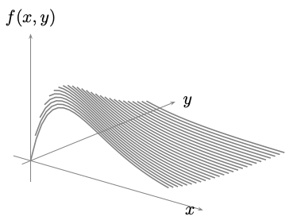

Ejercicios propuestos Tercer Examen Parcial
Ejercicio
Sean \( X \) y \( Y \) variables aleatorias con función de probabilidad conjunta:
$$
f_{X,Y}(x, y) = \frac{2}{n(n+1)}, \quad y = 1, \ldots, x; \quad x = 1, \ldots, n.
$$
- Calcular la función de probabilidad marginal \( \displaystyle{f_X(x)} \).
- Calcular la función de probabilidad condicional \( \displaystyle{f_{Y \mid X}(y \mid x)} \).
- Calcular la esperanza condicional \( \displaystyle{\mathbb{E}(Y \mid X = x)} \).
Ejercicio
Sean \( X \) y \( Y \) dos variables aleatorias con función de densidad conjunta dada por:
$$ \displaystyle{ f_{X,Y}(x, y) = y e^{-x}, \quad 0 < y \leq x < \infty }.$$
- Determine las funciones de densidad marginal \( f_X(x) \) y \( f_Y(y) \) especificando
apropiadamente el dominio de cada una de ellas.
- Determine las funciones de densidad condicional \( f_{X|Y}(\cdot \mid y) \) y \( f_{Y|X}(\cdot \mid x) \)
especificando apropiadamente el rango de los argumentos involucrados.
- Calcule la probabilidad condicional \( \displaystyle{\mathbb{P}(X > 2 \mathrm{ln}(2) \mid Y = \mathrm{ln}(2)) } \).
Ejercicio
La función de densidad conjunta de las variables aleatorias \( X \) y \( Y \) está dada por:
$$\displaystyle{ f_{X,Y}(x, y) = x e^{-(x+y)}, \quad x > 0, \quad y > 0 }.$$
- Determine las funciones de densidad marginal \( f_X(x) \) y \( f_Y(y) \) especificando
apropiadamente el dominio de cada una de ellas.
- Determine la función de densidad condicional \( f_{Y|X}(\cdot \mid x) \).
- Calcule la probabilidad \( \displaystyle{\mathbb{P}(X > \mathrm{4}) } \).
Ejercicio
La función de densidad conjunta de las variables aleatorias \( X \) y \( Y \) está dada por:
$$\displaystyle{ f_{X,Y}(x, y) = \frac{1}{2} y e^{-x y}, \quad 0 < x < \infty, \quad 0 < y < 2 } $$.
- Determine la función de densidad marginal \( f_Y (y)\).
- Determine la función de densidad condicional \( f_{X|Y}(\cdot \mid y) \), y calcula \( f_{X|Y}(\cdot \mid 2) \).
- Calcule la esperanza condicional \( \displaystyle{\mathbb{E}(X \mid Y = y) } \), y calcula \( \displaystyle{\mathbb{E}(X \mid Y = 2) } \)
Ejercicio
Supón que la variable aleatoria $Y$ tiene distribución Poisson con parámetro \( \lambda >0 \),
y que la distribución condicional de la variable aleatoria $X$, dado \( Y = y \), es binomial
con parámetros \( y \) y \( p \) con $p>0$, es decir,
\( X \mid Y = y \sim \text{Binomial}(y, p) \).
Demuestra que:
- La función de densidad de probabilidad marginal de \( X \), es decir, \( f_X \), sigue una distribución de Poisson con parámetro \( \lambda p \).
- La función de densidad de probabilidad condicional \( f_{Y \mid X}(\cdot \mid x) \) es Poisson con parámetro \( \lambda q \), donde \( q = 1 - p \), definida sobre el conjunto \( \{x, x + 1, \ldots\} \).
Ejercicio
Si \( X \) y \( Y \) son variables aleatorias discretas, muestra que
\[
\displaystyle{ \sum_x p_{X|Y}(x|y) = 1 }
\]
para todo \( y \) tal que \( \displaystyle{ p_Y(y) > 0 } \).
Ejercicio
Imagina que estás lanzando continuamente una moneda hasta que observes dos caras y que
la probabilidad de obtener cara es igual a \( p \). Sea \( X_1 \) la variable aleatoria
que indica el número de lanzamientos hasta obtener la primera cara, i.e. si $X_1 = k$,
entonces los primeros $k-1$ lanzamientos fueron (cruz), y el $k$-ésimo fue una cara
y \( X_2 \) el número de lanzamientos realizados hasta obtener la siguiente cara despues
de haber ocurrido la primer cara. Si la segunda cara ocurre en el lanzamiento número \( n \), ¿cuál es la probabilidad
condicional de que la primera cara haya ocurrido en el lanzamiento número \( i \), para \( i = 1, \ldots, n-1 \)?
Ejercicio
La función de masa de probabilidad conjunta de \( X \) y \( Y \), \( p(x, y) \), está dada por:
\[
\begin{aligned}
&p(1,1) = \frac{1}{9}, && p(2,1) = \frac{1}{3}, && p(3,1) = \frac{1}{9}, \\
&p(1,2) = \frac{1}{9}, && p(2,2) = 0, && p(3,2) = \frac{1}{18}, \\
&p(1,3) = 0, && p(2,3) = \frac{1}{6}, && p(3,3) = \frac{1}{9}
\end{aligned}
\]
Calcula \( \displaystyle{\mathbb{E}[X \mid Y = i] } \) para \( i = 1, 2, 3 \).
Ejercicio
En el ejercicio anterior, ¿son \( X \) y \( Y \) variables aleatorias independientes?
Ejercicio
Una urna contiene tres bolas blancas, seis rojas y cinco negras.
Se seleccionan al azar seis bolas de la urna. Sean \( X \) y \( Y \)
el número de bolas blancas y negras seleccionadas, respectivamente.
- Calcula la función de masa de probabilidad condicional de \( X \)
dado que \( Y = 3 \).
- Calcula \( \displaystyle{ \mathbb{E}[X \mid Y = 1] } \).
Ejercicio
Repite el ejercicio anterior pero bajo la suposición de que al seleccionar una bola se anota su color
y luego se devuelve a la urna antes de la siguiente selección.
Ejercicio
Sea \( p(x, y, z) \) la función de masa de probabilidad conjunta de las variables aleatorias \( X \), \( Y \) y \( Z \), dada por:
\[
\begin{aligned}
&p(1,1,1) = \frac{1}{8}, && p(2,1,1) = \frac{1}{4}, \\
&p(1,1,2) = \frac{1}{8}, && p(2,1,2) = \frac{3}{16}, \\
&p(1,2,1) = \frac{1}{16}, && p(2,2,1) = 0, \\
&p(1,2,2) = 0, && p(2,2,2) = \frac{1}{4}
\end{aligned}
\]
Calcula
- $\mathbb{E}[X \mid Y = 1]$
- $\mathbb{E}[X \mid Y = 1, Z = 1]$
Ejercicio
Demuestre que la función de densidad condicional \( x \mapsto f_{X|Y}(x|y) = \displaystyle{\frac{f_{X,Y}(x,y)}{f_Y(y)}} \) es efectivamente una función de densidad univariada. En el caso absolutamente continuo, compruebe además que
\( \displaystyle{f_{X|Y}(x|y) = \frac{\partial}{\partial x} F_{X|Y}(x|y)} \).
Ejercicio
Sea \( X \) con distribución \( \text{exp}(\lambda) \) y sea \( t_0 > 0 \) arbitrario pero fijo.
Demuestra que la distribución condicional de \( X - t_0 \), dado que \( X \geq t_0 \),
sigue siendo \( \text{exp}(\lambda) \).
Ejercicio
Para cada una de las siguientes funciones de densidad,
calcula \( \displaystyle{f_{X|Y}(x|y)} \) y \( \displaystyle{F_{X|Y}(x|y)} \):
- \( f(x, y) = \displaystyle{\frac{1}{ab}}, \quad 0 < x < a,\; 0 < y < b. \)
- \( f(x, y) = 4xy, \quad 0 < x,\; y < 1. \)
- \( f(x, y) = 24x(1 - x - y), \quad x,\; y > 0,\; x + y < 1. \)
- \( f(x, y) = \displaystyle{\frac{x + 2y}{4}}, \quad 0 < x < 2,\; 0 < y < 1. \)
- \( f(x, y) = \displaystyle{\frac{2(4x + y)}{5}}, \quad 0 < x,\; y < 1. \)
- \( f(x, y) = \displaystyle{\frac{1}{x}}, \quad 0 < y < x < 1. \)
- \( f(x, y) = \displaystyle{\frac{xy}{25}}, \quad 0 < x < 2,\; 0 < y < 5. \)
Ejercicio
Calcule las funciones condicionales \( \displaystyle{F_{X|Y}(x|y)} \) y \( \displaystyle{f_{X|Y}(x|y)} \), para las siguientes funciones de distribución conjunta:
- \( F(x, y) = \left(1 - e^{-x} \right) \left( \displaystyle{\frac{1}{2} + \frac{1}{\pi} \tan^{-1}(y)} \right), \quad x \geq 0. \)
- \( F(x, y) = 1 - e^{-x} - e^{-y} + e^{-x-y} , \quad x,y \geq 0. \)
Ejercicio
Se hacen tres lanzamientos de una moneda equilibrada cuyos resultados llamaremos cara y cruz. Sea \( X \) la variable que denota el número de caras que se obtienen en los dos primeros lanzamientos, y sea \( Y \) la variable que denota el número de cruces en los dos últimos lanzamientos. Calcule \( \displaystyle{f_{X,Y}(x,y)} \), \( \displaystyle{f_X(x)} \), \( \displaystyle{f_Y(y)} \) y \( \displaystyle{f_{Y|X}(y|x)} \) para \( x = 0, 1, 2 \).
Ejercicio
Sea \( (X, Y) \) un vector con función de densidad
\( \displaystyle{f(x,y) = \frac{x + y}{8}} \), para \( 0 \leq x, y \leq 2 \),
con gráfica como se muestra enseguida

Compruebe que \( f(x,y) \)
es una función de densidad y calcule:
- \( \displaystyle{f_X(x)} \).
- \( \displaystyle{f_Y(y)} \).
- \( \displaystyle{F_{X,Y}(x,y)} \).
- \( \displaystyle{F_X(x)} \).
- \( \displaystyle{F_Y(y)} \).
- \( \displaystyle{f_{X|Y}(x|y)} \).
- \( \displaystyle{f_{Y|X}(y|x)} \).
- \( \displaystyle{F_{X|Y}(x|y)} \).
- \( \displaystyle{F_{Y|X}(y|x)} \).
- \( \displaystyle{\mathbb{P}(Y > X)} \).
- \( \displaystyle{\mathbb{P}(X > 1 \mid Y < 1)} \).
- \( \displaystyle{\mathbb{P}(X > 1)} \).
- \( \displaystyle{\mathbb{P}(X + Y > 1)} \).
- \( \displaystyle{\mathbb{P}(|X - Y| > 1)} \).
Ejercicio
Sea \( (X, Y) \) un vector con función de densidad
\( \displaystyle{f(x,y) = \frac{1}{2} (x+y) e^{-x -y}} \), para \( x, y >0 \),
cuya gráfica aparece enseguida.

Compruebe que \( f(x,y) \)
es una función de densidad y calcule:
- \( \displaystyle{f_X(x)} \).
- \( \displaystyle{f_Y(y)} \).
- \( \displaystyle{F_{X,Y}(x,y)} \).
- \( \displaystyle{F_X(x)} \).
- \( \displaystyle{F_Y(y)} \).
- \( \displaystyle{f_{X|Y}(x|y)} \).
- \( \displaystyle{f_{Y|X}(y|x)} \).
- \( \displaystyle{F_{X|Y}(x|y)} \).
- \( \displaystyle{F_{Y|X}(y|x)} \).
- \( \displaystyle{\mathbb{P}(0 < X < 1, 0 < Y < 1)} \).
- \( \displaystyle{\mathbb{P}( Y > 2 \mid X < 1)} \).
- \( \displaystyle{\mathbb{P}(X > 1)} \).
- \( \displaystyle{\mathbb{P}(XY < 1)} \).
- \( \displaystyle{\mathbb{P}(X + Y > 1)} \).
- \( \displaystyle{\mathbb{P}(|X - Y| > 1)} \).
Ejercicio
Sea \( (X, Y) \) un vector con función de densidad \( \displaystyle{f(x,y) = 3y} \), para \( 0 < x < y < 1 \). Compruebe que \( f(x,y) \) es efectivamente una función de densidad y calcule:
- \( \displaystyle{\mathbb{P}(X + Y < 1/2)} \)
- \( \displaystyle{f_X(x)} \) y \( \displaystyle{f_Y(y)} \)
- \( \displaystyle{E(Y)} \) y \( \displaystyle{E(Y \mid X = x)} \)
Ejercicio
Sea \( (X, Y) \) un vector con distribución uniforme en el conjunto \( \{1, \ldots, 6\} \times \{1, \ldots, 6\} \). Calcule:
- \( \displaystyle{\mathbb{P}(X = Y)} \)
- \( \displaystyle{\mathbb{P}(X + Y \leq 6)} \)
- \( \displaystyle{f_X(x)} \)
- \( \displaystyle{f_Y(y)} \)
- \( \displaystyle{E(X \mid X + Y = 6)} \)
Ejercicio
Sea \( (X, Y) \) un vector con función de densidad dada por la siguiente tabla:
| Distribución conjunta de las v.a. \( X \) y \( Y \) |
| \( Y \backslash X \) |
-1 |
0 |
1 |
Totales |
| 1 | 0.30 | 0.05 | 0.05 | 0.40 |
| 2 | 0.05 | 0.20 | 0.05 | 0.30 |
| 3 | 0.10 | 0.10 | 0.10 | 0.30 |
| Totales | 0.45 | 0.35 | 0.20 | 1.0 |
Calcule:
- \(\displaystyle{\mathbb{P}(X = 2)}\).
- \(\displaystyle{\mathbb{P}(X + Y = 1)}\).
- \(\displaystyle{\mathbb{P}(Y \leq X)}\).
- \(\displaystyle{f_X(x)}\).
- \(\displaystyle{f_{Y\mid X}(y\mid x)}\) para $x=1,2,3$.
- \(\displaystyle{\mathbb{E}(X\mid Y=x)}\) para $x=1,2,3$.
Ejercicio
Sea $(X,Y)$ un vector aleatorio absolutamente continuo. Prueba que
$$\mathbb{E}[X] = \int_{\mathbb{R}} \mathbb{E}[X\mid Y = y ] f_{Y}(y) dy$$
Ejercicio
Sea $(X,Y)$ un vector aleatorio discreto. Prueba que
$$\mathbb{E}[X] = \sum_{y} \mathbb{E}[X\mid Y = y ] \mathbb{P}[Y = y]$$
Ejercicio
Sam leerá un capítulo de su libro de probabilidad o un capítulo de su libro de historia.
Si el número de errores tipográficos en un capítulo de su libro de probabilidad sigue una distribución de Poisson con media $2$,
y el número de errores tipográficos en un capítulo de su libro de historia sigue una distribución de Poisson con media $5$,
entonces, suponiendo que Sam tiene la misma probabilidad de elegir cualquiera de los dos libros,
¿Cuál es el número esperado de errores tipográficos que Sam encontrará?
Ejercicio
Sean $n,m \in \mathbb{N}$ arbitrarios pero fijos.
Si $X_1, \ldots, X_{n}$ y $ Y_1, Y_2, \ldots, Y_{m}$ son variables aleatorias,
prueba que
$$ \mathrm{Cov}\left( \displaystyle{\sum_{i=1}^n X_{i}}, \displaystyle{\sum_{j=1}^m Y_{j}} \right) = \sum_{i=1}^n \sum_{j=1}^m \mathrm{Cov}( X_i, Y_j)$$
Ejercicio
Sean $n\in \mathbb{N}$ arbitrario pero fijo.
Si $X_1, \ldots, X_{n}$ son variables aleatorias mutuamente independientes,
prueba que
$$ \mathrm{Var}\left( \displaystyle{\sum_{i=1}^n X_{i}} \right) = \displaystyle{\sum_{i=1}^n \mathrm{Var}\left(X_{i} \right)}$$
Ejercicio
Sean \( \displaystyle{X} \) y \( \displaystyle{Y} \) variables aleatorias que representan el número de autos y autobuses, respectivamente, formados en un semáforo en un momento dado. Supón que su función de probabilidad conjunta está dada por la siguiente tabla:
| Distribución conjunta de las v.a. \( X \) y \( Y \) |
| \( Y \backslash X \) |
0 |
1 |
2 |
3 |
Totales |
| 0 | 0.05 | 0.21 | 0 | 0 | 0.26 |
| 1 | 0.20 | 0.26 | 0.08 | 0 | 0.54 |
| 2 | 0 | 0.06 | 0.07 | 0.02 | 0.15 |
| 3 | 0 | 0 | 0.03 | 0.02 | 0.05 |
| Totales | 0.25 | 0.53 | 0.18 | 0.04 | 1 |
Calcula
- \( \displaystyle{\mathbb{E}(X)} \).
- \( \displaystyle{\mathbb{E}(Y)} \).
- \( \displaystyle{\mathrm{Var}(X)} \).
- \( \displaystyle{\mathrm{Var}(Y)} \).
- \( \displaystyle{\mathbb{E}(XY)} \).
- \( \displaystyle{\mathrm{Cov}(X, Y)} \).
- \( \displaystyle{\rho(X,Y)} \)
- Determina el tipo de correlación, si existe, que presentan las variables aleatorias \( \displaystyle{X} \) y \( \displaystyle{Y} \).
Ejercicio
Considera las variables aleatorias $X$ y $Y$ definidas como en el Ejercicio 2.2
Calcula
- \( \displaystyle{\mathbb{E}(X)} \).
- \( \displaystyle{\mathbb{E}(Y)} \).
- \( \displaystyle{\mathrm{Var}(X)} \).
- \( \displaystyle{\mathrm{Var}(Y)} \).
- \( \displaystyle{\mathbb{E}(XY)} \).
- \( \displaystyle{\mathrm{Cov}(X, Y)} \).
- \( \displaystyle{\rho(X,Y)} \)
- Determina el tipo de correlación, si existe, que presentan las variables aleatorias \( \displaystyle{X} \) y \( \displaystyle{Y} \).
Ejercicio
La función de densidad de $X,Y$ es
$$f(x,y) = \frac{1}{y} e^{- (y + \frac{x}{y}) }, \,\, 0 < x,y < \infty$$
Calcula
- \( \displaystyle{\mathbb{E}(X)} \).
- \( \displaystyle{\mathbb{E}(Y)} \).
- \( \displaystyle{\mathrm{Var}(X)} \).
- \( \displaystyle{\mathrm{Var}(Y)} \).
- \( \displaystyle{\mathbb{E}(XY)} \).
- \( \displaystyle{\mathrm{Cov}(X, Y)} \).
- \( \displaystyle{\rho(X,Y)} \)
- Determina el tipo de correlación, si existe, que presentan las variables aleatorias \( \displaystyle{X} \) y \( \displaystyle{Y} \).
Ejercicio
Si $X \sim \mathrm{Bin}(n_1,p)$ y $Y \sim \mathrm{Bin}(n_2,p)$
son variables aleatorias independientes, encuentra la función
de masa de probabilidad codicional de $X_1$ dado que $X + Y = n$.
Ejercicio
Si $X \sim \mathrm{Poisson}(\lambda_1)$ y $X \sim \mathrm{Poisson}(\lambda_2,p)$
son variables aleatorias independientes, encuentra la función
de densidad codicional de $X$ dado que $X + X = n$.
Ejercicio
Las variables aleatorias \( X \) y \( Y \) se dice que tienen una distribución normal bivariada
si su función de densidad conjunta está dada por:
\[
\displaystyle{
f_{X,Y}(x, y) = \frac{1}{2 \pi \sigma_x \sigma_y \sqrt{1 - \rho^2}}
\exp \left\{
-\frac{1}{2(1 - \rho^2)}
\left[
\left( \frac{x - \mu_x}{\sigma_x} \right)^2
- \frac{2\rho(x - \mu_x)(y - \mu_y)}{\sigma_x \sigma_y}
+ \left( \frac{y - \mu_y}{\sigma_y} \right)^2
\right]
\right\}
}, \, \, -\infty < x,y < \infty
\]
donde \( \sigma_x,\sigma_y,\mu_x,\mu_y \), y \( \rho \) son constantes tales que \( \sigma_x, \sigma_y \in \mathbb{R}^+ \), \(\mu_y, \mu_y \in \mathbb{R} \) y \( -1 < \rho < 1 \)
-
Demuestre que \( X \) está distribuida normalmente con media \( \mu_x \) y varianza \( \sigma_x^2 \), y que \( Y \) está distribuida normalmente con media \( \mu_y \) y varianza \( \sigma_y^2 \).
-
Demuestre que la densidad condicional de \( X \) dado que \( Y = y \) es normal con media
\[
\displaystyle{\mu_x + (\rho \sigma_x / \sigma_y)(y - \mu_y)}
\]
y varianza
\[
\displaystyle{\sigma_x^2(1 - \rho^2)}.
\]
- Prueba que $\rho = \rho(X,Y)$, i.e.
$$\displaystyle{\rho = \frac{E[(X - \mu_x)(Y - \mu_y)]}{\sigma_x \sigma_y} = \frac{\text{Cov}(X, Y)}{\sigma_x \sigma_y}}. $$
$\rho$ es el coeficiente de correlacion entre $X$ y $Y$.
Ejercicio
Un dado justo se lanza de forma independiente 10 veces. Calcula la probabilidad de que las caras
#1 a #6 aparezcan el siguiente número de veces, respectivamente: 2, 1, 3, 1, 2 y 1.
Ejercicio
Para un vector aleatorio con distribución multinomial, todas las distribuciones marginales y condicionales
son también multinomial.
Sea $X= (X_1, \ldots, X_k)$ un vector aleatorio con distribución multinomial con parametros $n$ y
$p_1, \ldots, p_k $ y $1 \leq s < k$ arbitrario pero fijo.
-
Si $Y = n - (X_{1} + \ldots, X_{s})$
y $q = 1 - (p_{1} + \ldots + p_{s})$, entonces el vector aleatorio $( X_{1}, X_{2}, \ldots, X_{s}, Y)$
tiene distribución multinomial con parámetros $n$ y $p_1, \ldots, p_k, q$
-
La distribución condicional de $X_{s+1}, \ldots, X_{k}$ dado que $X_{1} = x_1, X_{2} = x_2,\ldots, X_s = x_s$
es multinomial con parametros $n-r$ y $\displaystyle{\frac{p_{s+1}}{q}, \ldots, \frac{p_{k}}{q}}$ donde $r = x_1 + \cdots + x_s$
Observación: En este resultado las $s$ variables aleatorias no necesariamente tienen que ser las primeras
$s$, si no cualesquiera $s$ variables aleatorias, por ejemplo $X_{i_1}, X_{i_2}, \ldots, X_{i_s}$, y entonces
$Y= n - (X_{i_1} + X_{i_2} + \ldots + X_{i_s})$ y $q= 1 - (p_{i_1} + \ldots + p_{i_s})$. Enuncia el resultado para
el este elección arbitraria de $s$ variables aleatorias.
Ejercicio
Un dado justo se lanza de forma independiente 10 veces. Para cada $i=1,\ldots, 6$ sea $X_{i}$ que denota el número de ocurrencias
de la cara $i$. Calcula
- $\mathbb{P}(X_2 = X_4 = X_6 = 2)$
- $\mathbb{P}(X_1 = X_3 = 1, X_5 = 2 \vert X_2 = X_4 = X_6 = 2 )$
Ejercicio
En un experimento genético, se cruzan dos variedades diferentes de una cierta especie y
una característica específica de la descendencia solo puede ocurrir en tres niveles, A, B y C.
Según un modelo propuesto, las probabilidades para A, B y C son $\displaystyle{\frac{1}{12}$, $\frac{3}{12}}$ y $\displaystyle{\frac{8}{12}}$,
respectivamente. De 60 descendientes, calcula:
- La probabilidad de que 6, 18 y 36 caigan en los niveles A, B y C, respectivamente.
- La probabilidad (condicional) de que 6 y 18 caigan en los niveles A y B, respectivamente, dado que 36 han caído en el nivel C.
Ejercicio
En una tienda de televisores, se sabe que el 25% de los clientes comprará un televisor de la marca A, el 40% comprará un televisor de la marca B, y el 35% solo estará mirando (no comprará). Para un grupo de 10 clientes:
- ¿Cuál es la probabilidad de que 2 compren un televisor de la marca A, 3 compren un televisor de la marca B, y 5 no compren ninguno?
- Si se sabe que 6 clientes no compraron un televisor, ¿cuál es la probabilidad (condicional) de que 1 del resto compre un televisor de la marca A y 3 compren un televisor de la marca B?
Definición
Sean $X,Y$ variables aleatorias. Se define la función generadora de momentos del vector aleatorio $(X,Y)$, denotado por
$M_{X,Y}(t_1, t_2)$ como:
$$
M_{X,Y}(t_1, t_2) = \mathbb{E}\left(e^{t_1X + t_2Y}\right), \,\text{ donde }\, (t_1, t_2)\in B_{r}((0,0)) \subseteq \mathbb{R}^2 \text{ con } r >0
$$
Así, para el caso discreto y el continuo, tenemos, respectivamente:
$$M_{X,Y}(t_1, t_2) = \sum_{x_i, y_j } e^{t_1x_i + t_2y_j} f_{X,Y}(x_i, y_j), \label{eq:fgm_conjunta_discreta} $$
$$M_{X,Y}(t_1, t_2) = \int_{-\infty}^{\infty} \int_{-\infty}^{\infty} e^{t_1x + t_2y} f_{X,Y}(x, y)dx\, dy. \label{eq:fgm_conjunta_continua} $$
La función $M_{X,Y}(t_1,t_2)$ así definida también es llamada función generadora de momentos conjunta de
las variables aleatorias $X$ e $Y$.
Ejercicio
El número de clientes formados para ser atendidos frente a dos ventanillas en tu banco local se representa con las variables aleatorias \( X \) y \( Y \).
Supón que las variables aleatorias \( X \) y \( Y \) sólo pueden tomar los valores 0, 1, 2 y 3. Las probabilidades conjuntas están expresadas
en la siguiente tabla:
| Distribución conjunta de las v.a. \( X \) y \( Y \) |
| \( Y \backslash X \) |
0 |
1 |
2 |
3 |
Totales |
| 0 |
0.05 | 0.21 | 0 | 0 | 0.26 |
| 1 |
0.20 | 0.26 | 0.08 | 0 | 0.54 |
| 2 |
0 | 0.06 | 0.07 | 0.02 | 0.15 |
| 3 |
0 | 0 | 0.03 | 0.02 | 0.05 |
| Totales |
0.25 | 0.53 | 0.18 | 0.04 | 1 |
Calcula $M_{X,Y}(t_1, t_2)$
Ejercicio
Sean $X,Y$ variables aleatorias. Prueba las siguientes propiedades:
- \(\displaystyle{ M_{X,Y}(0, 0) = 1 }\)
- Las funciones generadoras de momentos marginales de las variables aleatorias \( X \) y \( Y \)
se obtienen a partir de la función generadora de momentos conjunta de \( X \) y \( Y \), es decir,
\[
\displaystyle{ M_{X,Y}(t_1, 0) = M_X(t_1), \quad M_{X,Y}(0, t_2) = M_Y(t_2) }
\]
- Para constantes \( c_1, c_2, d_1, d_2 \), se satisface:
\[
\displaystyle{ M_{c_1X + d_1, c_2Y + d_2}(t_1, t_2) = e^{d_1t_1 + d_2t_2} M_{X,Y}(c_1t_1, c_2t_2) }
\]
- Siempre que se pueda intercambiar el orden de derivación y esperanza. Se cumple lo siguiente :
$$\displaystyle{ \left. \frac{\partial}{\partial t_1} M_{X,Y}(t_1, t_2) \right|_{t_1 = t_2 = 0} = E[X]}$$
$$\displaystyle{\left. \frac{\partial}{\partial t_2} M_{X,Y}(t_1, t_2) \right|_{t_1 = t_2 = 0} = E[Y] }$$
$$\displaystyle{ \left. \frac{\partial^2}{\partial t_1 \partial t_2} M_{X,Y}(t_1, t_2) \right|_{t_1 = t_2 = 0} = E[XY] }$$